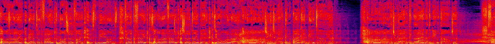
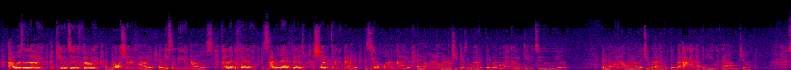
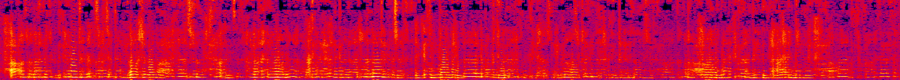
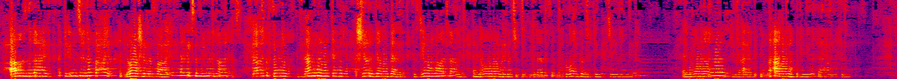
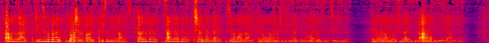

I'm curious if the impressive results for style transfer on images can be applied to audio spectrograms to produce compelling singing transfer.
I've started with the case of stylizing an acapella cover to match the original vocal. This case is "simple" because the phonemes are identical in both the content and style audio. The pair I'm testing with is below; the original acapella (and a cover) of One Last Time by Ariana Grande:
Style Acapella (Original Vocal):One Last Time by Ariana Grande. This acapella's tempo is slightly different from the original, but that shouldn't matter. 
Content Acapella (Acapella Cover):Cover found on YouTube 
Attempt 1: Using Ulyanov's Project
Dmitry Ulyanov and Vadim Lebedev published a post on Audio texture synthesis and style transfer as an experiment. I've modified their code slightly to make it work on 30s files,Here's a link to the modified code. but the algorithm is the same.
Here are the style transfer results (with a few different values for the style weight α):
Style Transfer (α = 0.0001 : Too much style 😭): 
Style Transfer (α = 0.001 : Okay 👌): 
Style Transfer (α = 0.01 : Too much content 😭): 
Although the spectrograms look reasonable, the results don't sound very compelling yet. I'll log further experiments here as they're performed–if you have any suggestions for research to look at or modifications to try, let me know!